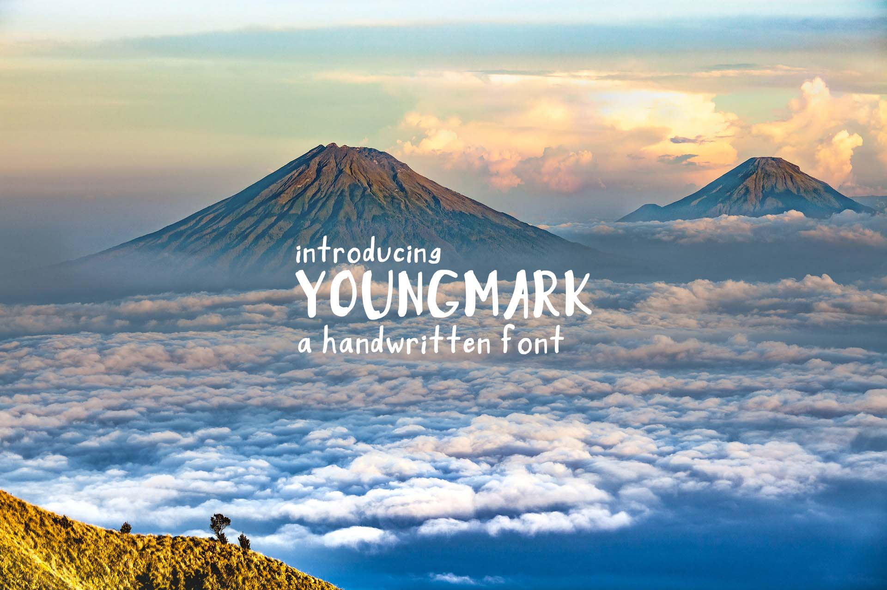

this launch project was introduced to my web development class to help us explore something we were interested in. in class, we were allowed 20% time to pursue a growing passion. for me, i knew fonts was to be my focus.
i first started making composite images in sixth grade. my favorite part, by far, was adding words-- i loved bringing all the visual elements together with the right phrase. i also realized, that text is also a visual element. that was when i started recognizing and thoughtfully using fonts and typefaces.
as we learned the regular class curriculum, i was able to see how fonts are essential to web design; size, style, visibility. after all, text was originally the only element on webpages. for my own project, i researched classic typefaces and the creators my own favorite fonts. i used articles and videos to guide my ideas in how to build the alphabet and turn that into something usable. nearing the end of the year, we were given the task to build a webpage using bootstrap, featuring our launch projects. this is the accumulation of my launch project and everything i learned in class.
the LAUNCH cycle.
my first font.

YOUNGMARK, my first font, is a creation inspired by the handwritten fonts i loved before i could appreciate the simplicity of more classic typefaces. to recreate that same atmosphere from handwritten fonts, i drew YOUNGMARK with a thick brush in photoshop. the result was a shaky, yet faithful, ode to handwritten typefaces.